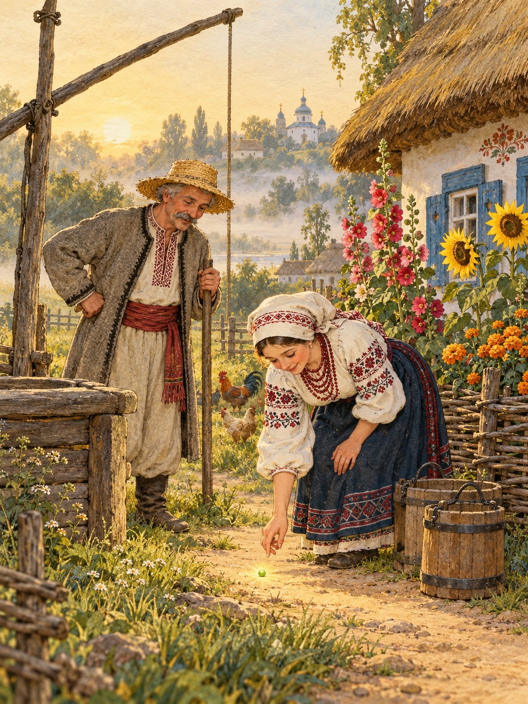

Довго чекали батьки дітей, та ніхто не повертався. Посивів батько, а мати щодня виходила за ворота й дивилася на дорогу.
Одного ранку пішла вона до криниці по воду й побачила, що стежкою котиться маленька зелена горошина. Мати підняла її, подивилася і з’їла.
Невдовзі народився в них син. Назвали його Котигорошком. Ріс він не щодня, а щогодини, і за кілька літ став таким дужим, що підіймав воза одною рукою.
